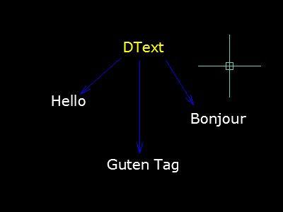
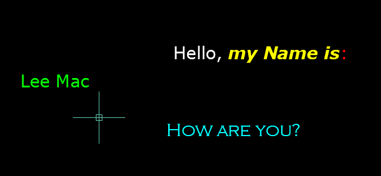

Text2MText Upgraded
This page is delivered for consistency purposes only, as part of the LeeMac sample module of DynALisp, which shows how DynALisp turns existing AutoLISP programs into a module. The program and its description are the work of Lee Mac, who keeps all the credit for them. The original page, with the latest version, is on Lee Mac's website: https://lee-mac.com/text2mtext.html
| Function Syntax | LM-TextToMtext – original syntax: T2M (see aliases) |
| Current Version | 2.0 |
| Compatible with AutoCAD for Mac? | No |
| Compatible with AutoCAD LT? | No |
| Original Page | lee-mac.com/text2mtext.html |
Program Description
A dynamic variation on the familiar Express Tools function, this program allows the user to dynamically amalgamate several separate MText & DText objects into a single MText object, with all formatting remaining in tact. The user is also provided with additional options to control how text strings are combined.
Text will take on the layer of the first text entity chosen (as per the behaviour of the Express Tools function), but will keep its colour if not set to ByLayer.
The user is provided with two modes of operation: Same Line & New Line, which may be switched by pressing the spacebar between selections. When operating in Same Line mode, new text is appended to the end of the last line in the resulting MText object, whereas the New Line mode forces selected text to begin on a new line.
Shift-Clicking on Text object will keep the original object in place, whilst still add its string to the resultant MText; and upon pressing u between selections, the last text selected will be removed from the resultant MText object.
Examples of Usage
Combining Three DText Objects into a Single MText Object

Combining DText & Mtext into a Single MText Object

Bundled program notes
;;---------------------=={ Text 2 MText Upgraded }==---------------------------;;
;; ;;
;; Similar to the Txt2MTxt Express Tools function, but allows the user ;;
;; additional control over where the text is placed in the resultant MText. ;;
;; ;;
;; The user can pick MText or DText, positioning such text using one of two ;;
;; modes: "New Line" or "Same Line". The Modes can be switched by pressing ;;
;; Space between picks. ;;
;; ;;
;; The user can also hold shift and pick text to keep the original text in ;;
;; place, and press "u" between picks to undo the last text pick. ;;
;; ;;
;;-------------------------------------------------------------------------------;;
;; ;;
;; FUNCTION SYNTAX: T2M ;;
;; ;;
;; Notes:- ;;
;; -------- ;;
;; Shift-click functionality requires the user to have Express Tools installed. ;;
;; ;;
;;-------------------------------------------------------------------------------;;
;; ;;
;; Author: Lee Mac, Copyright © September 2009 - www.lee-mac.com ;;
;; ;;
;;-------------------------------------------------------------------------------;;
;; ;;
;; Version: ;;
;; ;;
;; 1.0: 27/09/2009 - First Release ;;
;;-------------------------------------------------------------------------------;;
;; 1.1: 29/09/2009 - Minor Bug Fixes ;;
;;-------------------------------------------------------------------------------;;
;; 1.2: 29/09/2009 - Fixed Alignment Bug ;;
;; - Added Code to match Height ;;
;;-------------------------------------------------------------------------------;;
;; 1.3: 01/10/2009 - Added option to Copy Text. ;;
;;-------------------------------------------------------------------------------;;
;; 1.4: 01/10/2009 - Added option to Undo Last text selection ;;
;;-------------------------------------------------------------------------------;;
;; 1.5: 30/03/2010 - Modified code to allow for mis-click. ;;
;; - Updated UndoMarks. ;;
;;-------------------------------------------------------------------------------;;
;; 1.6: 15/04/2010 - MText objects now have correct width. ;;
;; - Accounted for %%U symbol. ;;
;;-------------------------------------------------------------------------------;;
;; 1.7: 16/04/2010 - Fixed %%U bug. ;;
;; - Trimmed Spaces when in 'Same Line' mode. ;;
;; - Fixed Width when Undo is used. ;;
;; - Allowed Shift-Click to keep first text object selected. ;;
;;-------------------------------------------------------------------------------;;
;; 1.8: 10/05/2010 - Allowed for UCS variations. ;;
;; - Matched initial text rotation. ;;
;;-------------------------------------------------------------------------------;;
;; 1.9: 21/05/2010 - Added ability to use SelectionSet to select text. ;;
;;-------------------------------------------------------------------------------;;
;; 2.0: 07/06/2010 - Fixed offset from cursor with rotated text. ;;
;;-------------------------------------------------------------------------------;;
Command Names And Aliases
As in every DynALisp module, each program of this sample module has one main command, named LM-*, and the original command names of Lee Mac's page are kept as its aliases: they run the same command, and can be added, renamed or removed in Dyl-Suite (saved in Resources\Aliases.csv).
| Command | Aliases | Name |
|---|---|---|
| LM-TextToMtext | T2M | Text To Mtext |